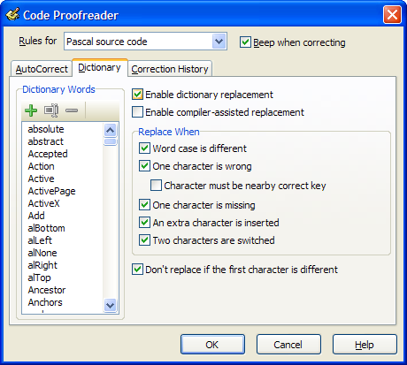

Code Proofreader |
  
|
Code Proofreader |
|
The Code Proofreader is a powerful tool that can correct your typing in the code editor as-you-type based on a list of custom dictionary words, a list of AutoCorrect entries, or context sensitive information supplied by the Delphi compiler. It supports Delphi, C++, SQL, and C# code.
The corrections can be customized per source file type and even for different syntax entities within a file by using the dropdown box at the top of the window. You can import or export dictionary words from/to ASCII files that contain one word per line, or you can insert or delete single words using the provided buttons.
AutoCorrect entries wait for you to press a certain sequence of keys, and then replace that string with another string you define. This can be used to correct typing mistakes you commonly make, or it can be used to expand simple macros. AutoCorrect entries support usage of the "|" character to determine the position of the cursor after the correction takes place, similar to the IDE's Code Templates. If you want to create more complex macros containing multiple lines or dynamic text substitutions, try using the Macro Templates feature instead.
The compiler replacement option allows GExperts to interface with the Delphi compiler to generate a context-sensitive list of potential matches for a typed identifier and use that list to attempt to correct the typed identifier. Be careful, since this option causes the IDE to attempt to recompile parts of the project each time you press a non-alphanumeric keystroke in the source code window, and can slow down your coding on older machines. This option is useful to auto-correct identifiers to match the case they were declared in. Note that if you have dictionary replacement enabled and a typed identifier is present in the dictionary, compiler replacement is not attempted for that identifier, to allow you to easily override replacements where the compiler's suggested results are not ideal. For example, you may want to make sure the dictionary contains the language keywords, so those are never corrected, since the compiler correction feature (which uses the code completion dropdown identifier list) does not support keywords in all IDE versions.
Several options allow you to tune the dictionary and compiler correction. You can choose to correct or not correct based on word case; errors based on incorrectly hitting nearby keys on the keyboard; and missing, inserted, or switched characters in the word. Finally, the Code Proofreader can issue a beep after correcting to make sure you know it was activated.
The Correction History tab on this form shows the last few corrections that were made, so you can review exactly what the Code Proofreader has changed and what rule triggered the correction, since this isn't always obvious. You can also disable any of the recent corrections, if you find a correction is not helpful.
